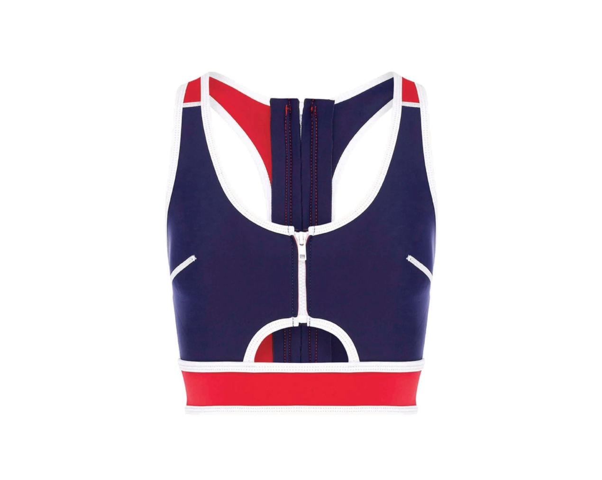
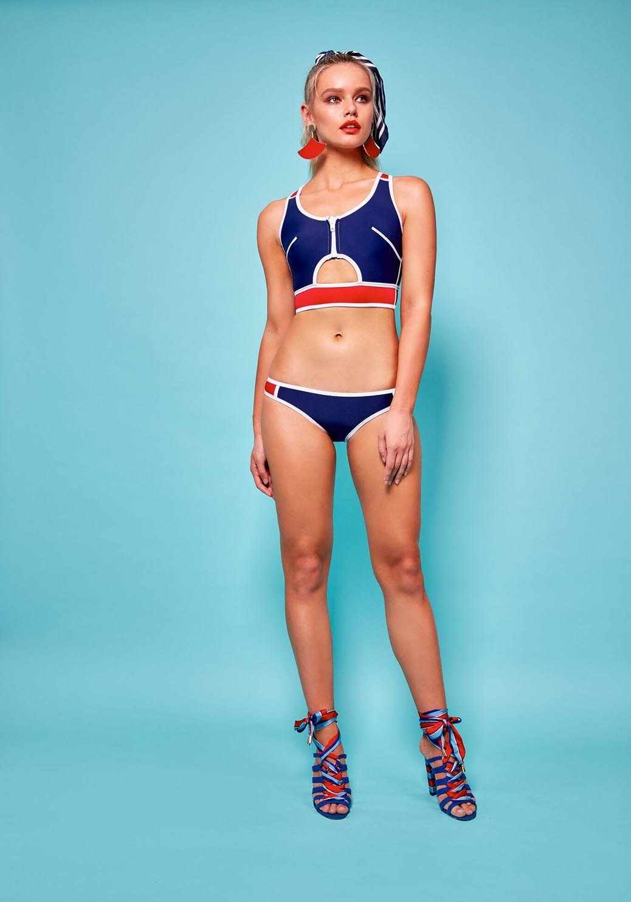
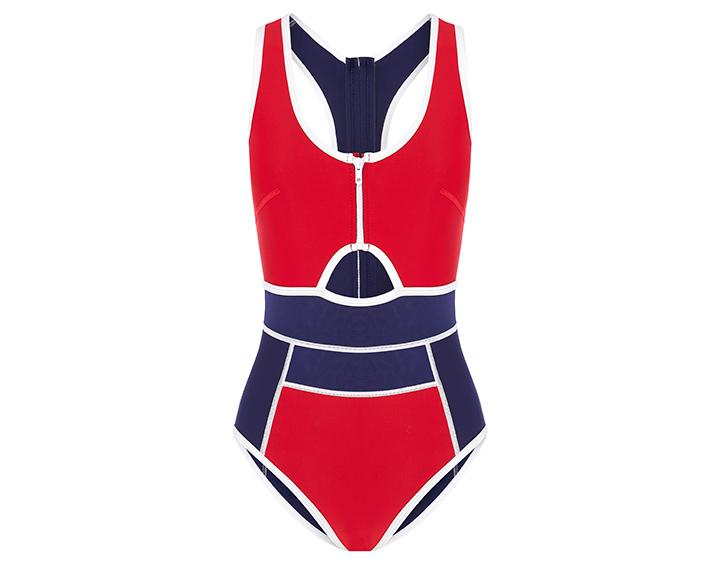

여름에 임시저장해놨는데 미루면 영원히 못쓸거 같아서 올립니다
펜타포트 보러 인천갔다가 들린 커피숍에서 우연히 본 패션잡지에서 발견한 브랜드로
호주 수영복 브랜드인 Duskii 입니다
https://duskii.com/

이유는 알수없지만 지퍼달린 수영복 매우 좋아합니다//// 입고 벗기 편해서 그른가 ㅋㅋ
위 아래 한세트 지만 전 탑만 샀습니다
가을에 강릉 놀러갔을때 잘 입었어요
수영복이니까 얇고 잘 늘어나는 재질일거라 생각했는데 수영복과 스킨스쿠버슈트 사이 어드메 입니다;;
원래 입는 사이즈보다 한치수 크게사도 될거같아요 :p
넘 내 취향의 수영복들이 많아 동네방네 떠들고싶었는데(...)
정신차려보니 12월 이래요;;
이 엄동설한에 수영복브랜드 하나 포스팅 합니다 ㅋㅋㅋ

요 원피스 타입도 예뻐용 :)